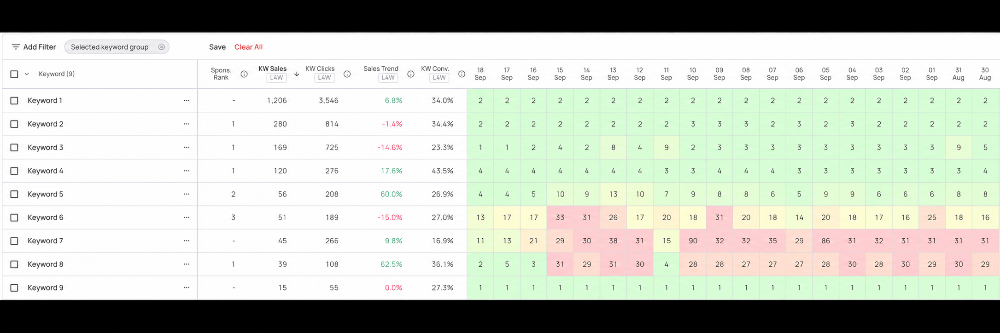
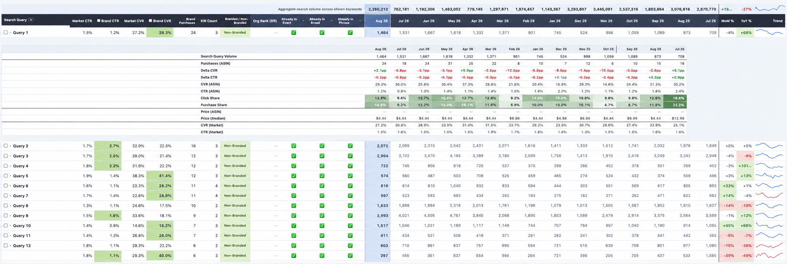
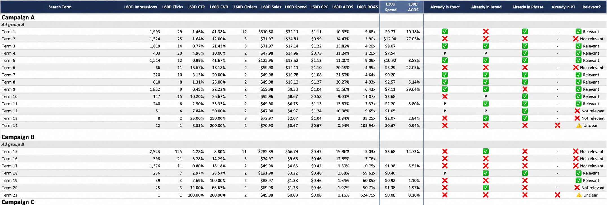
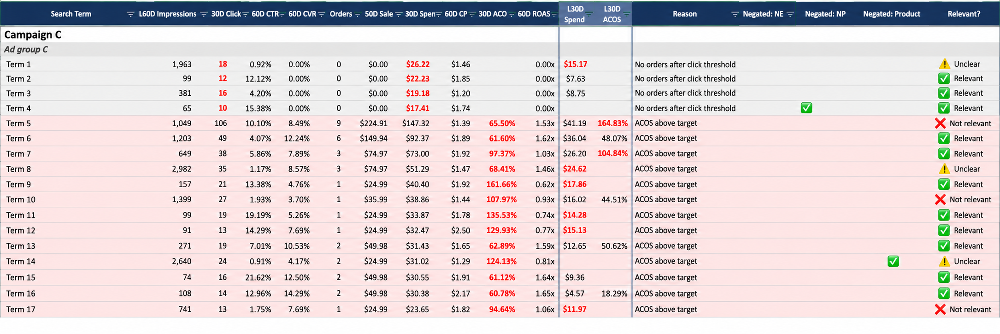

01 / HIGH TACOS OR ACOS
Find spend that is not earning its place
Audit search terms, targets, placements, budgets, and conversion signals; then prioritize changes that support efficiency and profit.
High TACOS, stalled rankings, or a launch that needs traction? I help 5- to 8-figure sellers find what is holding performance back, build a focused strategy, and manage the account hands-on.
Six years in Amazon PPC · Work across US, Canada, UK, and EU marketplaces
I look beyond ad metrics alone. The right PPC plan accounts for organic rankings, product margins, inventory, and the stage of each product.
Audit search terms, targets, placements, budgets, and conversion signals; then prioritize changes that support efficiency and profit.
Use keyword intent, competitor research, and Search Query Performance data to shape launch and growth strategies.
Get clear reporting and recommendations from me who manages campaigns directly and communicates the reasoning behind changes.
Different brands, different challenges. Here are outcomes from my work, with client names omitted for confidentiality.
Lowered account TACOS while maintaining organic rankings and increasing profitability.
Grew accounts, including CPG brands, while keeping TACOS at target.
Helped a Home & Kitchen product earn an Amazon Best Seller badge within three weeks of launch.
Listing optimization lifted CTR, increased sessions, and helped lower CPCs.
Results vary by account. See more context in my case study video ↗
Paid sales are only part of the picture. I use three views of search demand and visibility to see whether the strategy is helping a product earn more of the market organically.
I follow priority keyword positions over time to see whether a product is gaining unpaid visibility as PPC supports sales velocity.
I built an SQP dashboard to track search volume trends, compare a brand’s click and purchase share with the wider market, identify opportunities, and flag declines in market share early.
I built a dashboard that surfaces converting terms to harvest, checks whether they are already targeted, and flags spend leaks such as terms with spend but no sales or ACOS above target. That turns raw search terms into specific actions.
These screenshots come from accounts I personally manage.




Together, these signals help me decide where to invest, where to fix conversion, and whether PPC gains are translating into stronger organic presence.
I keep a small client roster so I can stay close to each account. I manage campaigns directly and connect ad performance to margins, organic rankings, account/product goals, inventory, and seasonality. I share what I am seeing through reports, meetings, and Loom videos.
I have also built AI-assisted workflows for search term harvesting, SQP analysis, market share research, BSR and Buy Box checks, and reporting. They speed up repeatable analysis so more time goes into decisions and execution.
Review goals, margins, inventory, organic rankings, search terms, and campaign performance.
Identify wasted spend, keyword gaps, launch needs, and conversion issues.
Manage Sponsored Products, Brands, and Display; track outcomes and explain the next move.
Tell me your realistic goals, margin/TACOS limit, and what feels stuck. I’ll start with a free account audit of what is working, where spend may be leaking, and what I would prioritize next.
If you came from an Upwork proposal, reply there and I’ll continue the conversation with you.